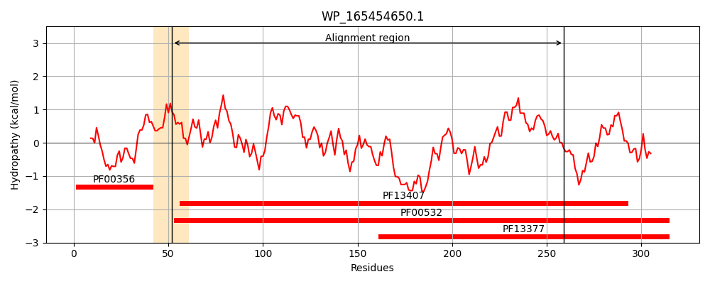
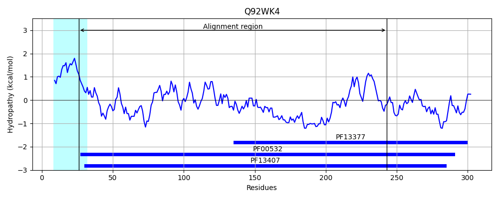
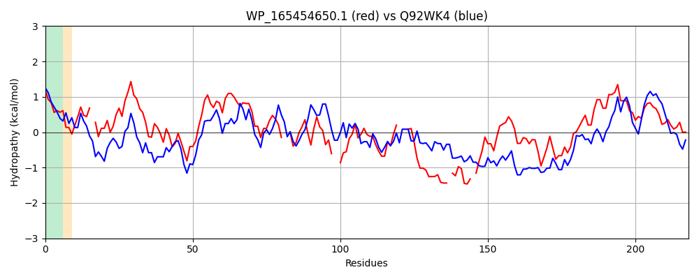

Hit Accession: Q92WK4
Hit TCID: 3.A.1.2.11
Hit Description: gnl|BL_ORD_ID|17249 gnl|TC-DB|Q92WK4|3.A.1.2.11 Probable ABC transporter sugar-binding protein - Rhizobium meliloti (Sinorhizobium meliloti).
Mach Len: 218
e:0.000000
Query TMS Count : 1
Hit TMS Count: 1
TMS-Overlap Score: 0.850000
Predicted Substrates:CHEBI:4840;erythritol
BLAST Alignment:
Score: 127 , Bit scores: 53 bits, E-value: 3.5e-08, Alignment length: 218, Percentage identity: 22
Query: 52 SSNFIGIVTAGFDNPF-RSKLLAPLVHQLALNGFMPLLMNADDPQQLAPSLKQLLSYHVAGVIITSGAPPLSLAEEYLARK--IPVTLINRHADLAGC--DRVCSDNAQGAKLVADLFSR---RGWQQVGFIGENRE-NFSTRQR-YEAFIAQTSGMAVSSRFCDGGGYQAGYQAARELVAENPGVQALFCATDMLALGALDGLRDAPAPLPAIVGFD 259
+++ I I+T DNPF +++ + L +L++ DD + + + + +I+ + S+A A+ +P LI+R + G ++ S+N QGA+L A+ F + V +G + N R + Y I + M + ++ GY ++ NP ++ + D +A+GA+ L+ A +VGFD
Sbjct: 26 AADLIAIITPSHDNPFFKAEAVGAEAKAKELGYETLVLVHDDDANKQSQLIDTAIGRGAKAIILDNAGSEASIAAVQKAKDAGVPSFLIDREINATGVAVSQIVSNNYQGAQLGAEEFVKLMGESGNYVELLGREADLNAGIRSKGYHDVIDEYPEMKMVAQQSANWSQTEGYSKMETILQANPDIKGVISGNDTMAMGAIAALQAAGRKDVIVVGFD 243 | Protein Hydropathy Plots: |
|---|
|  |  |
Pairwise Alignment-Hydropathy Plot:
|
|---|
|  |